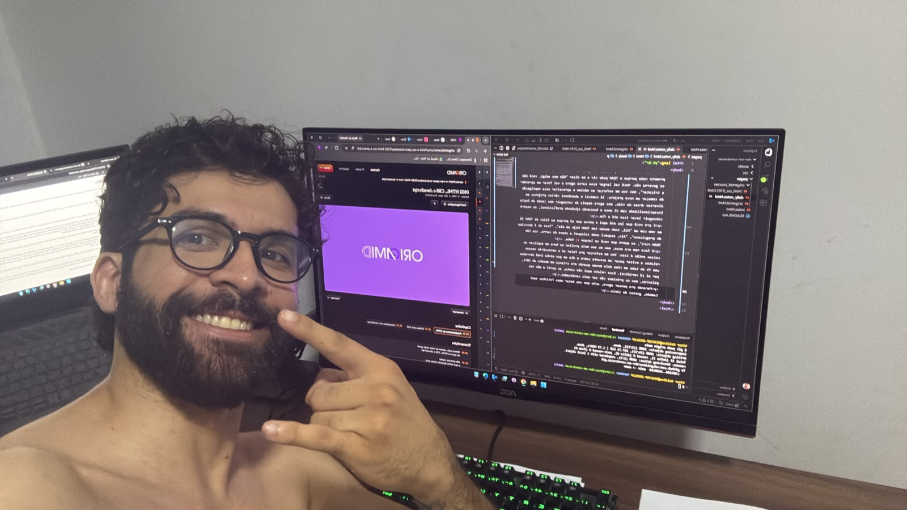

Aqui é um espaço onde vou registrar diariamente o que pensei durante esse período de estudo e aprendizado, as novas ideias, dificuldades e etc.
Eu comecei o projeto de fato nessa data mas estou escrevendo esse texto já no dia 20/10/2026 porque me deu preguiça naquela noite e também porque eu precisava ir dormir (já tava um pouco tarde).
Agora sim to escrevendo no mesmo dia do texto. Bom, agora são 21:35 de uma terça-feira e eu tenho que acordar cedo amanhã pra ir pro treino de Jiu-jitsu 06h.
Quando eu pensei em fazer esse projeto, eu queria uma forma de praticar aquilo que eu to estudando e também já fazer resumos e anotações sobre os temas. Então a forma que eu achei foi essa: criar um site onde eu poderia registrar minhas anotações dos estudos e de quebra já ir praticando enquanto organizo essas anotações dentro do próprio site. Então basicamente eu vou no curso da Origamid que comprei, assisto a aula do dia e depois venho aqui no código e faço uma página específica pro conteúdo daquela aula. Nessa página eu vou anotar todo o conteúdo que eu vi, do meu jeito, e já ir praticamente e aplciando exemplos na prática. Com o acumulo do conhecimento no futuro eu vou melhorando as estruturas aos poucos e deixando o projeto com um visual melhor e mais amigável.
Hoje em dia eu uso o ChatGPT pra me ajudar, não pra fazer código e sim pra tirar algumas dúvidas mais pontuais, me passar exemplos de situações da vida real onde eu poderia aplicar aqueles recursos que to vendo no curso, ou pra revisar meu código e me dizer onde acertei e onde errei. Hoje em dia só uso ele de IA nesse projeto. Depois vou dar uma pesquisada melhor e ver se acho alguma outra que possa agregar também, tipo o Claude ou o Gemini.
Hoje é o primeiro dia onde eu botei a mão na massa de forma mais "pesada", digamos assim. Fiz toda a estrutura e conteúdo da página 01 do módulo 01 do curso HTML e CSS para Iniciantes da Origamid. Vou tentar focar mais nesse curso primeiro e depois ir testando os outros. Não prometo nada porque o TDAH pode vir e me dizer "Não meu amigo, você não se governa não. Você vai largar esse curso agora e vai focar em aprender a tricotar", mas vou me esforçar ao máximo e aproveitar essa empolgação de começar um novo projeto. Já comecei e abandonei vários projetos em diversas áreas da vida, mas agora depois de conseguir meu laudo de Dupla Excepcionalidade com 25 anos e buscando ajudando profissional, eu espero conseguir levar isso até o fim.
E pra você que leu até aqui e pensa que só porque eu falei de TDAH já me vem com um "Alá, todo mundo tem TDAH hoje em dia", "Isso ai é desculpa de preguiçoso", "Ain, esqueci onde coloquei a chave do carro, sou tão TDAH rsrs", eu quero que você se lasque :D hehe.
O foco nem era esse, mas eu sou meio prolixo na hora de explicar as coisas então é isso. Vou me esforçar pra falar só o necessário nesses relatos e evitar puxar um assunto sobre o dia em que minha irmã derrubou uma TV de tubo em cima dela mesma quando era criança em meados de 2011, por ai (é verídico). Esse relato aqui não conta, eu perdi a mão nas palavras, mas os próximos vão ser mais condensados.
Parando pra pensar agora, acho que vou botar umas fotinhas aqui também, gostei da ideia.
